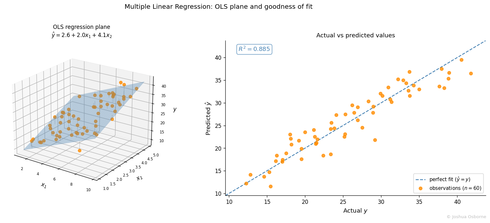

Statistics Notes
Matrix OLS derivation, normal equations, t-tests, F-test, adjusted R², and VIF from scratch.
Contents
Multiple linear regression extends Simple Linear Regression to model a response variable as a linear combination of multiple predictors.
A single predictor rarely tells the whole story. Exam scores depend on hours studied and hours slept. House prices depend on square footage, number of bedrooms, and neighborhood. Simple Linear Regression handles one predictor at a time, but fitting separate simple regressions ignores the fact that predictors are often correlated. Multiple linear regression holds all other predictors constant while estimating the effect of each one, disentangling those contributions.
Multiple linear regression models the conditional expectation of \(Y\) given predictors \(X_1, \ldots, X_p\) as a linear function of those predictors:
\[y_i = \beta_0 + \beta_1 x_{i1} + \beta_2 x_{i2} + \cdots + \beta_p x_{ip} + \varepsilon_i, \quad i = 1, \ldots, n\]
In matrix form, stacking all \(n\) observations:
\[\mathbf{y} = \mathbf{X}\boldsymbol{\beta} + \boldsymbol{\varepsilon}\]
The first column of \(\mathbf{X}\) is all ones, encoding the intercept. OLS estimates \(\boldsymbol{\beta}\) by minimizing the residual sum of squares over all \(n\) observations simultaneously.
| Symbol | Type | Meaning |
|---|---|---|
| \(y_i\) | scalar | observed response for observation \(i\) |
| \(x_{ij}\) | scalar | value of predictor \(j\) for observation \(i\) |
| \(\mathbf{y}\) | \(n \times 1\) vector | response vector |
| \(\mathbf{X}\) | \(n \times (p+1)\) matrix | design matrix; column 0 is all ones |
| \(\boldsymbol{\beta}\) | \((p+1) \times 1\) vector | true coefficient vector \((\beta_0, \beta_1, \ldots, \beta_p)^T\) |
| \(\hat{\boldsymbol{\beta}}\) | \((p+1) \times 1\) vector | OLS estimate of \(\boldsymbol{\beta}\) |
| \(\boldsymbol{\varepsilon}\) | \(n \times 1\) vector | true unobservable errors; \(\mathbb{E}[\boldsymbol{\varepsilon}] = \mathbf{0}\) |
| \(\mathbf{e}\) | \(n \times 1\) vector | observed residuals \(\mathbf{y} - \mathbf{X}\hat{\boldsymbol{\beta}}\) |
| \(n\) | integer | number of observations |
| \(p\) | integer | number of predictors (not counting the intercept) |
| \(\sigma^2\) | scalar | variance of the true errors |
| \(\hat{\sigma}^2\) | scalar | estimated error variance: \(\text{RSS}/(n - p - 1)\) |
| \(\text{RSS}\) | scalar | residual sum of squares \(\|\mathbf{y} - \mathbf{X}\hat{\boldsymbol{\beta}}\|^2\) |
| \(\text{TSS}\) | scalar | total sum of squares \(\sum(y_i - \bar{y})^2\) |
| \(R^2\) | scalar \(\in [0,1]\) | proportion of variance in \(Y\) explained by the model |
| \(R^2_{\text{adj}}\) | scalar | \(R^2\) penalised for the number of predictors |
| \(\text{SE}(\hat{\beta}_j)\) | scalar | standard error of the \(j\)-th OLS coefficient |
| \(t_j\) | scalar | t-statistic for testing \(H_0: \beta_j = 0\) |
| \(F\) | scalar | F-statistic for testing all slopes jointly |
| \(\text{VIF}_j\) | scalar | variance inflation factor for predictor \(j\) |
Step 1: Write the OLS objective.
\[\text{RSS}(\boldsymbol{\beta}) = \|\mathbf{y} - \mathbf{X}\boldsymbol{\beta}\|^2 = (\mathbf{y} - \mathbf{X}\boldsymbol{\beta})^T(\mathbf{y} - \mathbf{X}\boldsymbol{\beta})\]
Expand:
\[= \mathbf{y}^T\mathbf{y} - 2\boldsymbol{\beta}^T\mathbf{X}^T\mathbf{y} + \boldsymbol{\beta}^T\mathbf{X}^T\mathbf{X}\boldsymbol{\beta}\]
Step 2: Differentiate with respect to \(\boldsymbol{\beta}\) and set to zero.
\[\frac{\partial \text{RSS}}{\partial \boldsymbol{\beta}} = -2\mathbf{X}^T\mathbf{y} + 2\mathbf{X}^T\mathbf{X}\boldsymbol{\beta} = \mathbf{0}\]
This gives the normal equations:
\[\mathbf{X}^T\mathbf{X}\,\hat{\boldsymbol{\beta}} = \mathbf{X}^T\mathbf{y}\]
Step 3: Solve for \(\hat{\boldsymbol{\beta}}\), assuming \(\mathbf{X}^T\mathbf{X}\) is invertible (i.e., no perfect multicollinearity):
\[\boxed{\hat{\boldsymbol{\beta}} = (\mathbf{X}^T\mathbf{X})^{-1}\mathbf{X}^T\mathbf{y}}\]
Step 4: Variance of the estimator.
Since \(\hat{\boldsymbol{\beta}} = (\mathbf{X}^T\mathbf{X})^{-1}\mathbf{X}^T\mathbf{y}\) is linear in \(\mathbf{y}\), its covariance matrix follows by the linear-transformation variance rule:
\[\text{Var}(\hat{\boldsymbol{\beta}}) = \sigma^2(\mathbf{X}^T\mathbf{X})^{-1}\]
The standard error of the \(j\)-th coefficient is the square root of the \(j\)-th diagonal entry:
\[\text{SE}(\hat{\beta}_j) = \hat{\sigma}\sqrt{\left[(\mathbf{X}^T\mathbf{X})^{-1}\right]_{jj}}, \quad \hat{\sigma}^2 = \frac{\text{RSS}}{n - p - 1}\]
The denominator \(n - p - 1\) is the residual degrees of freedom: \(n\) observations minus \(p + 1\) estimated parameters.
Individual t-tests.
To test whether predictor \(j\) contributes after controlling for all others:
\[t_j = \frac{\hat{\beta}_j}{\text{SE}(\hat{\beta}_j)} \sim t_{n-p-1} \quad \text{under } H_0: \beta_j = 0\]
The two-sided p-value for coefficient \(j\) is:
\[p_j = 2\,P\!\left(T_{n-p-1} > |t_j|\right)\]
A 95% confidence interval for \(\beta_j\) uses the same t-distribution:
\[\hat{\beta}_j \pm t_{0.025,\, n-p-1} \cdot \text{SE}(\hat{\beta}_j)\]
This is the same duality as in confidence intervals: \(p_j < 0.05\) if and only if the 95% CI for \(\beta_j\) excludes zero.
Confidence interval for the mean response at a new point.
Given a new predictor vector \(\mathbf{x}_0 = (1, x_{01}, \ldots, x_{0p})^T\), the fitted mean is \(\hat{y}_0 = \mathbf{x}_0^T\hat{\boldsymbol{\beta}}\). Its standard error comes from the variance of a linear combination of \(\hat{\boldsymbol{\beta}}\):
\[\text{SE}(\hat{y}_0) = \hat{\sigma}\sqrt{\mathbf{x}_0^T(\mathbf{X}^T\mathbf{X})^{-1}\mathbf{x}_0}\]
So the 95% CI for the conditional mean \(\mathbb{E}[Y \mid \mathbf{X} = \mathbf{x}_0]\) is:
\[\hat{y}_0 \pm t_{0.025,\, n-p-1} \cdot \hat{\sigma}\sqrt{\mathbf{x}_0^T(\mathbf{X}^T\mathbf{X})^{-1}\mathbf{x}_0}\]
Prediction interval for a new individual observation.
A prediction interval must also account for the irreducible error \(\varepsilon_0\) of the new observation itself, so it adds \(\hat{\sigma}^2\) inside the square root:
\[\hat{y}_0 \pm t_{0.025,\, n-p-1} \cdot \hat{\sigma}\sqrt{1 + \mathbf{x}_0^T(\mathbf{X}^T\mathbf{X})^{-1}\mathbf{x}_0}\]
The prediction interval is always wider than the CI for the mean. The extra \(1\) inside the square root represents the variance of a new draw from the error distribution, which cannot be reduced by collecting more data.
F-test for overall model significance.
To test whether any predictor is useful at all (\(H_0: \beta_1 = \cdots = \beta_p = 0\)):
\[F = \frac{(\text{TSS} - \text{RSS})/p}{\text{RSS}/(n-p-1)} \sim F_{p,\, n-p-1} \quad \text{under } H_0\]
The F-statistic requires \(n > p + 1\) so that the residual degrees of freedom \(n - p - 1\) are positive. When \(p \geq n\), \(\mathbf{X}^T\mathbf{X}\) is singular and OLS has no unique solution; the F-test is undefined. In that regime use regularization (ridge, lasso) or dimensionality reduction instead.
Goodness of fit.
\[R^2 = 1 - \frac{\text{RSS}}{\text{TSS}}\]
\(R^2\) always increases when a predictor is added, even a useless one. The adjusted version penalizes for \(p\):
\[R^2_{\text{adj}} = 1 - \frac{\text{RSS}/(n-p-1)}{\text{TSS}/(n-1)}\]
Multicollinearity: Variance Inflation Factor.
When predictors are correlated, the columns of \(\mathbf{X}\) are nearly linearly dependent and \((\mathbf{X}^T\mathbf{X})^{-1}\) inflates. The VIF for predictor \(j\) quantifies this:
\[\text{VIF}_j = \frac{1}{1 - R^2_j}\]
where \(R^2_j\) is the \(R^2\) from regressing \(x_j\) on all other predictors. A VIF above 10 is a common warning threshold for severe multicollinearity.
The same five Gauss-Markov conditions as in Simple Linear Regression apply in matrix form.
| # | Assumption | Meaning |
|---|---|---|
| 1 | Linearity | \(\mathbb{E}[\mathbf{y} \mid \mathbf{X}] = \mathbf{X}\boldsymbol{\beta}\) |
| 2 | Independence | rows of \(\mathbf{X}\) are independent draws |
| 3 | Homoscedasticity | \(\text{Var}(\varepsilon_i) = \sigma^2\) for all \(i\) |
| 4 | Zero mean errors | \(\mathbb{E}[\boldsymbol{\varepsilon}] = \mathbf{0}\) |
| 5 | Normality | \(\boldsymbol{\varepsilon} \sim \mathcal{N}(\mathbf{0}, \sigma^2\mathbf{I})\) |
Assumptions 1 through 4 are the Gauss-Markov conditions; under these alone, \(\hat{\boldsymbol{\beta}}\) is the Best Linear Unbiased Estimator. See Gauss-Markov Theorem. Assumption 5 additionally makes the t-tests and F-tests exact in finite samples. “Exact” means the test statistic follows its stated distribution (\(t_{n-p-1}\) or \(F_{p,\,n-p-1}\)) for any \(n\), not just approximately. Without normality the CLT guarantees only that the distributions converge as \(n \to \infty\); with normally distributed errors they hold exactly even for \(n = 10\).
When many candidate predictors are available, not all belong in the final model. Three greedy procedures are commonly used.
Forward selection. Start with the intercept-only model. At each step, add the single predictor that produces the largest reduction in RSS (or equivalently the most significant F-statistic for the added variable). Stop when no remaining predictor improves the model by a threshold criterion (e.g., \(p < 0.05\) or an AIC decrease).
Backward elimination. Start with all \(p\) predictors. At each step, remove the predictor with the largest p-value (least significant t-statistic). Stop when all remaining predictors are below the removal threshold. Requires \(n > p + 1\) to fit the full model initially.
Mixed (stepwise) selection. Combine both directions: after each forward addition, check whether any variable already in the model has become non-significant and remove it. This corrects for the fact that adding a new variable can make a previously significant predictor redundant.
All three are heuristics and do not guarantee finding the globally optimal subset. They can also inflate Type I error through mutiple testing. For rigorous model comparison, prefer information criteria (AIC, BIC) or cross-validation.
Five students are observed. \(x_1\) is hours studied, \(x_2\) is hours slept the night before, and \(y\) is the exam score.
| \(i\) | \(x_{i1}\) | \(x_{i2}\) | \(y_i\) |
|---|---|---|---|
| 1 | 1 | 2 | 14 |
| 2 | 2 | 1 | 11 |
| 3 | 3 | 3 | 23 |
| 4 | 4 | 2 | 22 |
| 5 | 5 | 4 | 35 |
Step 1: Build the design matrix and response vector.
\[\mathbf{X} = \begin{pmatrix} 1 & 1 & 2 \\ 1 & 2 & 1 \\ 1 & 3 & 3 \\ 1 & 4 & 2 \\ 1 & 5 & 4 \end{pmatrix}, \qquad \mathbf{y} = \begin{pmatrix} 14 \\ 11 \\ 23 \\ 22 \\ 35 \end{pmatrix}\]
Step 2: Compute the normal equation components.
\[\mathbf{X}^T\mathbf{X} = \begin{pmatrix} 5 & 15 & 12 \\ 15 & 55 & 41 \\ 12 & 41 & 34 \end{pmatrix}, \qquad \mathbf{X}^T\mathbf{y} = \begin{pmatrix} 105 \\ 368 \\ 292 \end{pmatrix}\]
Step 3: Solve the normal equations.
Applying Gaussian elimination to \(\mathbf{X}^T\mathbf{X}\,\hat{\boldsymbol{\beta}} = \mathbf{X}^T\mathbf{y}\) (or equivalently inverting \(\mathbf{X}^T\mathbf{X}\)):
\[\hat{\boldsymbol{\beta}} = \begin{pmatrix} 0.6 \\ 2.8 \\ 5.0 \end{pmatrix}\]
Interpretation: holding sleep constant, one additional study hour is associated with a 2.8-point increase in score. Holding study hours constant, one additional hour of sleep is associated with a 5.0-point increase.
Step 4: Compute residuals and RSS.
| \(i\) | \(\hat{y}_i\) | \(e_i = y_i - \hat{y}_i\) | \(e_i^2\) |
|---|---|---|---|
| 1 | 13.4 | 0.6 | 0.36 |
| 2 | 11.2 | \(-0.2\) | 0.04 |
| 3 | 24.0 | \(-1.0\) | 1.00 |
| 4 | 21.8 | 0.2 | 0.04 |
| 5 | 34.6 | 0.4 | 0.16 |
\[\text{RSS} = 1.60\]
Step 5: Estimate \(\sigma^2\) and compute standard errors.
\[\hat{\sigma}^2 = \frac{\text{RSS}}{n - p - 1} = \frac{1.60}{2} = 0.80, \qquad \hat{\sigma} = 0.894\]
Using the diagonal of \((\mathbf{X}^T\mathbf{X})^{-1}\):
\[\text{SE}(\hat{\beta}_0) = 1.058, \qquad \text{SE}(\hat{\beta}_1) = 0.393, \qquad \text{SE}(\hat{\beta}_2) = 0.544\]
Step 6: t-tests (df \(= 2\), critical value \(t_{0.025,2} = 4.303\)).
\[t_0 = 0.6/1.058 = 0.57 \quad (p > 0.05)\]
\[t_1 = 2.8/0.393 = 7.12 \quad (p < 0.05)\]
\[t_2 = 5.0/0.544 = 9.19 \quad (p < 0.05)\]
Both predictors are significant; the intercept is not distinguishable from zero with only five observations.
Step 7: F-test and \(R^2\).
\[\text{TSS} = \sum(y_i - \bar{y})^2 = 350, \quad \bar{y} = 21\]
\[R^2 = 1 - \frac{1.60}{350} = 0.9954, \qquad R^2_{\text{adj}} = 1 - \frac{0.80}{87.5} = 0.9909\]
\[F = \frac{(350 - 1.60)/2}{1.60/2} = \frac{174.2}{0.80} = 217.8 \gg F_{0.05,\,2,\,2} = 19.0\]
The model is highly significant overall.
In Simple Linear Regression the fitted model is a line through a 2D scatter. With two predictors the model becomes a plane through a 3D scatter. With \(p\) predictors it is a hyperplane in \((p+1)\)-dimensional space: impossible to draw, but the algebra is identical.

The left panel shows a 3D scatter of synthetic data with the fitted regression plane. Every point’s vertical distance to the plane is its residual; OLS finds the plane that minimises the sum of squared vertical distances simultaneously. The right panel shows actual versus predicted values: a model with a perfect fit would place all points on the diagonal, so the scatter around it measures the residual variance.
The key gain over separate simple regressions is that \(\hat{\beta}_j\) is the effect of \(x_j\) with all other predictors held fixed. If \(x_1\) and \(x_2\) are correlated, a simple regression of \(y\) on \(x_1\) will absorb some of \(x_2\)’s effect into \(\hat{\beta}_1\), biasing it. MLR corrects for this by projecting out the variation in \(x_1\) that is explained by the other predictors before estimating its coefficient.
“\(\hat{\beta}_j\) is the effect of \(x_j\) on \(y\).” It is the effect of \(x_j\) on \(y\) holding all other predictors in the model constant. Add or remove a predictor and every coefficient can change, sometimes dramatically.
“Adding more predictors improves the model.” \(R^2\) always increases with more predictors, even if those predictors are pure noise. Use \(R^2_{\text{adj}}\), AIC, or BIC for model selection, or an explicit F-test comparing nested models.
“A large coefficient means an important predictor.” Coefficients are in the units of the predictor. A coefficient of 0.001 on GDP (in dollars) can represent a larger effect than a coefficient of 10 on a binary indicator. Standardise predictors or compare effect sizes before judging importance.
“Multicollinearity biases the coefficients.” Multicollinearity does not bias \(\hat{\boldsymbol{\beta}}\); OLS remains unbiased. What it does is inflate standard errors, making coefficients individually insignificant even when the predictors jointly explain a lot of variance. The F-test can be significant while all t-tests fail.
“If \(p > n\), OLS still works.” When the number of predictors exceeds the number of observations, \(\mathbf{X}^T\mathbf{X}\) is singular and the inverse does not exist. Regularisation (ridge, lasso) or dimensionality reduction is required.
Simple Linear Regression, Gauss-Markov Theorem, bias-variance tradeoff, Generalized Linear Models, confidence intervals, p-value
James, G., Witten, D., Hastie, T., & Tibshirani, R. (2021). An Introduction to Statistical Learning (2nd ed.). Springer. Chapter 3.
Freedman, D., Pisani, R., & Purves, R. (2007). Statistics (4th ed.). W. W. Norton.